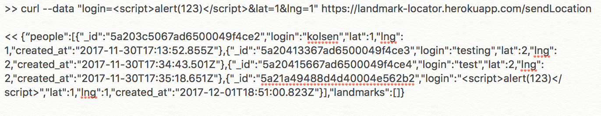
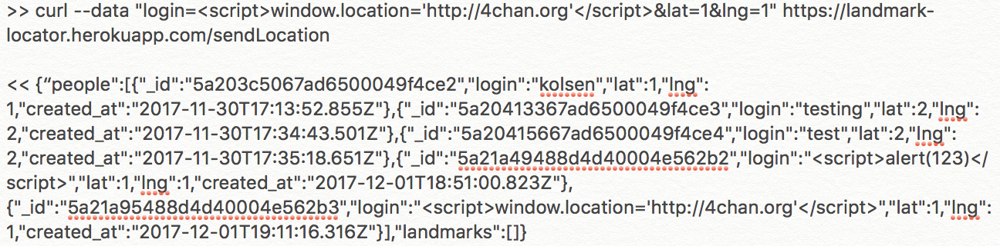
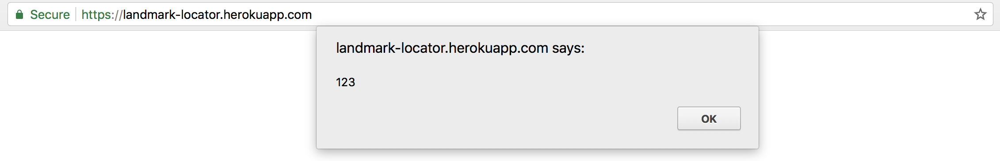
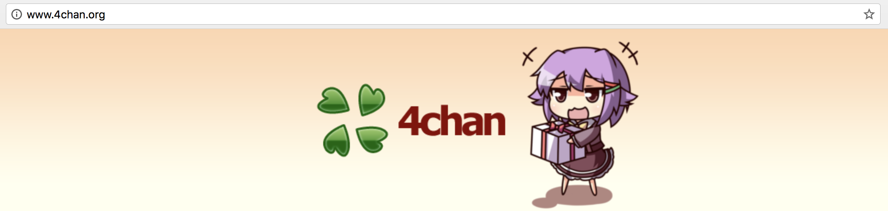
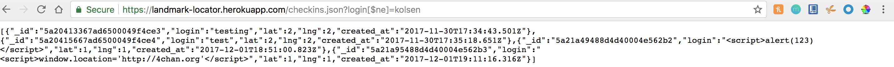
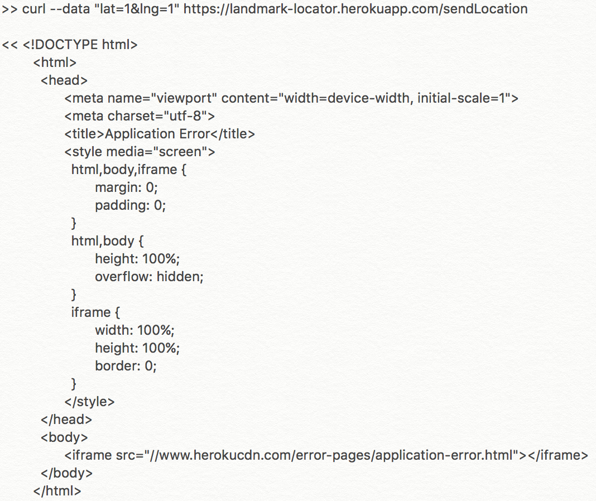
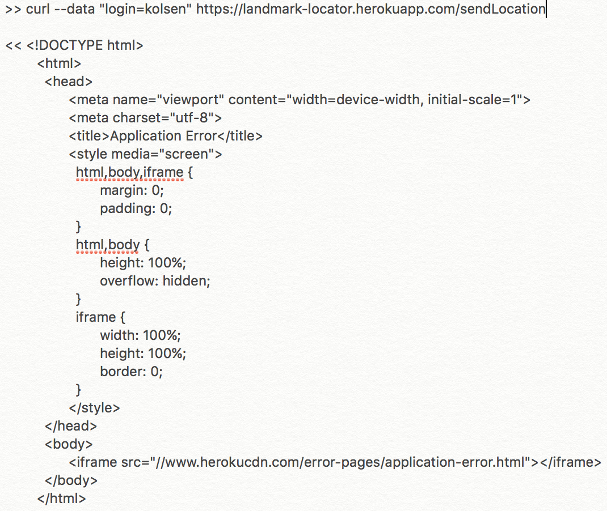
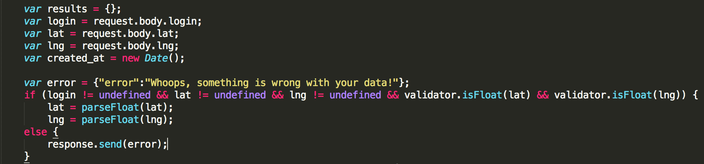

The product is a web application that renders a location map using client and server side data. Unforutnatley, the web application is riddled with security and privacy vulnerabilities. I am hired to resolve the security and privacy issues in the applications. For reference, the following is the link to the web application we are testing: https://landmark-locator.herokuapp.com/ .
First, any past documents in the collection (MongoDB database) for checkins were deleted to allow for a clean slate. This allows for the following to be executed to check for vulnerabilities in the web application:
The above vulnerabilities were primarily checked for via curl in terminal. Curl commands vary based on what test was being exexcuted, but input paramters (login, lat, lng) and location of the webpage were changed for each test. The code for the web applicatoin was also viewed to determine any bad programming practices, vulnerabilities, and to suggest recommenations.
The following vulnerabilities were found: Cross Site Scripting (XSS), privacy errors for location and logins, and bypassing restrictions on input choices. For XSS, scripts were injected to login using curl. Specifically, adding an 'alert' popup and window location redirection was inserted to login via script. Both attacks triggered responses and, therefore, displayed vulnerabilities of the web application. An attacker could exploit this vulnerabilty within the web application so that the victim would be redirected to another webpage or receive malicious script to the browser. For privacy, there were two errors found. Changing the query string on the checkins.json (checkins.json?login[$ne]=kolsen) page can display all logins of all users who have checked in and their location. This is like a loop hole in MongoDB, where data that is not equal to the login 'kolsen', is returned on the web page, that was not accounted for in the code. The private information of any user who has checked in (location, id, and date checked in) is revealed. Furthermore, the overall location of the user is not private. There is no security authentication for location and thus it can be accessed or viewed by anyone. Testing inputting parameters via curl (login, lat, and lng), the web application crashedwhen not all of the parameters were satisfied. For example, in the cases of no login and no lat/lng, the app resulted in an 'Application Error' on Herokuapp instead of returning '[]'.
Checkins (https://landmark-locator.herokuapp.com/)
An attacker could exploit this vulnerabilty within the web application to send the victim malicious script/data or redirect the victim to another page that has malicious script/data. Furthermore, the attacker can steal cookie information, display annoying messages, and present all users with fraudulent web content.
Injecting an 'alert' script into the login paramter and sending via curl to POST /sendLocation yielded an alert to pop up on web application 'Check-Ins' page (See image below). Furthermore, injecting script to redirect to another webpage into the login paramter and sending via curl to POST /sendLocation resulted in the webpage 'Check-Ins' to redirect to 4chan.org (See image below).


Popup of alert on 'Check-Ins' page (https://landmark-locator.herokuapp.com/).

Redirection of Check-Ins page to 4chan.org

Never trust user input. Currently, the code only validates lat and lng. One should add a validator that only recieves login information that has no special characters. This will strip any characters such as < , / , " , ' , and > so that no script, style, or event handlers can be executed.
checkins.json (https://landmark-locator.herokuapp.com/checkins.json)
Private information of the user (id, location, and checked-in time) can be revealed to the attacker and exploited.
Through exploiting MongoDB injections, the query for https://landmark-locator.herokuapp.com/checkins.json can be changed to provide all logins. This is through teh parameter [$ne]=LOGIN where LOGIN is the login that you don't want to be returned. For this test, the the query was changed to checkins.json?login[$ne]=kolsen (LINK: https://landmark-locator.herokuapp.com/checkins.json?login[$ne]=kolsen). Results for all check-ins besides check-ins matching the lgoin 'kolsen' are returned and displayed.
Displaying all last check-ins, excluding the login 'kolsen'.

To resolve this, a web proxy can be used to intercept the request to the server. The proxy can then alter the request from the client to the server such that the JSON response does not reveal any user private information.
sendLocation (https://landmark-locator.herokuapp.com/sendLocation)
When inputting the login, lat, lng parameters via curl in terminal, the web application crashes if not all parameteres are satisfied. An 'Application Error' in Heroku suggests a larger internal error with the code. A simple fix in code would resolve this error. There is no large threat of attack, but the web application does not work for the user if all parameters are not entered.
According to guidelines, the web application should return '{"error":"Whoops, something is wrong with your data!"}' when not all parameters (login, lat, lng) are entered correctly. However, sending via curl in terminal only lat and lng or only login results in an 'Application Error' on Heroku.
Only lat and lng parameters sent via curl in terminal.

Only login parameter sent via curl.

The same 'Application Error' response seen above was also obtained for when only login and lat or login and lng were sent via curl in terminal.
Analyzing the code for the app landmark-locator, a variable containing the JSON response {"error":"Whoops, something is wrong with your data!"} should be addded. For the case when the parameter is undefined, there should be a response.send of the varibale containing the JSON. Altering a bit of the original code, see below for the addition of the JSON response.
Code including the variable 'error' was added.

https://www.acunetix.com/websitesecurity/cross-site-scripting/
https://www.owasp.org/index.php/XSS_(Cross_Site_Scripting)_Prevention_Cheat_Sheet
http://blog.securelayer7.net/mongodb-security-injection-attacks-with-php/